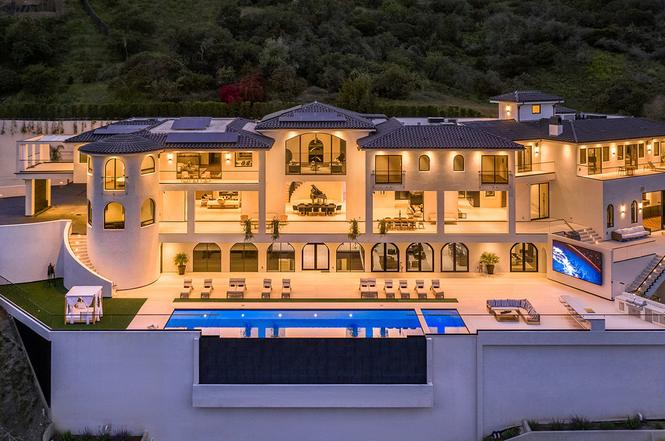

Price= 49 000 000 $

The Orum House is a spectacular, AIA award-winning masterpiece of contemporary architecture and design situated on a private promontory in Bel Air. Famed architect Zoltan Pali envisioned the 3-story residence to float above its surroundings, wrapping it in glass that frames panoramic views of the Getty Center, Downtown L. A. and the Pacific Ocean. The steel and glass structure features three wings, balancing views, scale and comfort to create a living experience that accommodates large-scale entertaining and warm, inviting family life. Encompassing 18,850 square feet of interior living, 6,000 square feet of deck space, 9 bedrooms and 15 baths, The Orum House was designed to offer amenities for gathering, wellness and entertainment. Among its features are dual master suites, dual chef's kitchens, shaded patios with fire pit lounges, an LED-lit pool and spa, 1,000-bottle wine room, Dolby Atmos theater, wellness center, parking for 30 cars, and a 4-bedroom guesthouse.
link to this home
Price= 67 500 000 $

A triumphant modern estate with explosive city views wrapping the LA skyline and Bel Air Country Club golf course. Estate is perfectly situated through the Bel Air West Gate, a few minutes to Sunset. Approximately 30,000 sq ft w/ approx. 40,000 sq ft of decks and yard for outdoor living and sports! Designed with every amenity imaginable including a theater with seating for over 40 guests with game room and bar, two lane bowling alley, wine cellar, professional salon, sports court/ world class gym. A 5,600 sq ft master suite with theater and a spa. 70 ft infinity pool and spa, with cascading waterfalls and hotel size cabana, two 50 ft. fire features, putting green and spacious yard. Motor court for 60 cars, 14 car garage w/ A/C, Hi-Speed 4000 pound Otis commercial elevator, Crestron system, Mitsubishi state of the art HVAC, whole house generator. Guard house at gate with kitchen and bath. Extreme attention to detail and flawless architectural design and floor plan.
link to this home
Price= 78 000 000 $

Escape the bustling city and arrive at UNICA, a one-of-a-kind trophy estate with rare amenities commensurate of a luxury resort. Newly constructed, this 8bed & 21bath modern Spanish Villa spans over 41,000SF of living. A sprawling open floorplan welcomes you upon entry w/ floor-to-ceiling glass pocket doors for quintessential indoor/outdoor living. Truly an entertainers compound, the lower levels astonish with remarkable features including basketball court, 36-person theater, 1200+ bottle wine cellars, recording studio & wellness center w/ 75' indoor pool, sauna, steam room, salon & fitness studio. Transport to your own private oasis in the rear yard with its multi-level patios, 75' size infinity edge pool/spa, weather-proof Samsung wall & outdoor kitchen all enveloped by views. The estate is finished with lavish master w/ dual closets & baths, spacious guest suites, 20+ auto gallery, eight bars, service kitchen, maid's quarters, top-of-the-line tech, Circadian Rhythm lighting, & more.
link to this home
Price= 160 000 000 $

Authentic Italian village encompassing the largest assemblage in Beverly Park. On over nine acres, accessed by its own street, this one-of-a-kind property took over seven year to create. Expansive gates open to a 30 car courtyard surrounded by 40 foot tall Canary Island palms and a setting worthy of the best Italian palazzo. Inside the mansion, approximately 20,000 square feet afford every possible amenity from high ceilings to large and formal gathering areas to small and intimate spaces. A four plus acre backyard offers views to a pool with pool house, two-story guesthouse, tennis court, two bedroom guest house and a walking/jogging trail that surrounds the estate. A separate lot comes with possibilities for expansion or separate development. This is one of the finest estates ever offered in Beverly Hills.
link to this home

Jennifer Aniston
Jennifer Joanna Aniston (born February 11, 1969) is an American actress, producer, and businesswoman. The daughter of actors John Aniston and Nancy Dow, she began working as an actress at an early age with an uncredited role in the 1987 film Mac and Me. Her first major film role came in the 1993 horror comedy Leprechaun. Since her career grew in the early 1990s, Aniston has been one of Hollywood's highest-paid actresses.
Zayn Malik

Zain Javadd Malik (/ˈmælɪk/; born 12 January 1993), known mononymously as Zayn, is an English singer and songwriter. Born and raised in Bradford, Malik auditioned as a solo contestant for the British music competition The X Factor in 2010. After being eliminated as a solo performer, Malik was brought back into the competition, along with four other contestants, to form the boy band One Direction. Malik left the group in March 2015 and subsequently signed a solo recording contract with RCA Records.
Elon Musk

Elon Reeve Musk FRS (/ˈiːlɒn/; born June 28, 1971) is a business magnate, industrial designer, engineer, and philanthropist.[6] He is the founder, CEO, CTO and chief designer of SpaceX; early investor,[b] CEO and product architect of Tesla, Inc.; founder of The Boring Company; co-founder of Neuralink; and co-founder and initial co-chairman of OpenAI. He was elected a Fellow of the Royal Society (FRS) in 2018.[9][10] Also that year, he was ranked 25th on the Forbes list of The World's Most Powerful People,[11] and was ranked joint-first on the Forbes list of the Most Innovative Leaders of 2019.[12] As of October 19, 2020, his net worth was estimated by Forbes to be US$91.9 billion,[13][14] making him the 5th richest person in the world. He is also the longest tenured CEO of any automotive manufacturer globally.
Ronald Reagan

Ronald Wilson Reagan (/ˈreɪɡən/ RAY-gən; February 6, 1911 – June 5, 2004) was an American politician who served as the 40th president of the United States from 1981 to 1989 and became a highly influential voice of modern conservatism. Prior to his presidency, he was a Hollywood actor and union leader before serving as the 33rd governor of California from 1967 to 1975.